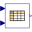

TablesLibrary of blocks to interpolate in one and two-dimensional tables |
Package Contents
|
Table look-up in one dimension (matrix/file) with one input and n outputs |
|
|
Table look-up in one dimension (matrix/file) with n inputs and n outputs |
|
|
Table look-up in two dimensions (matrix/file) |
|
|  |
Table look-up in two dimensions (matrix/file) with vector inputs and vector output of size n |
|
Internal external object definitions for table functions that should not be directly utilized by the user |
Information
This information is part of the Modelica Standard Library maintained by the Modelica Association.
This package contains blocks for one- and two-dimensional interpolation in tables.
Special interest topic: Statically stored tables for real-time simulation targets
Especially for use on real-time platform targets (e.g., HIL-simulators) with no file system, it is possible to statically store tables using a function "usertab" in a file conventionally named "usertab.c". This can be more efficient than providing the tables as Modelica parameter arrays.
This is achieved by providing the tables in a specific structure as C-code and compiling that C-code together with the rest of the simulation model into a binary that can be executed on the target platform. The "Resources/Data/Tables/" subdirectory of the MSL installation directory contains the files "usertab.c" and "usertab.h" that can be used as a template for own developments. While "usertab.c" would be typically used unmodified, the "usertab.h" needs to adapted for the own needs.
In order to work it is necessary that the compiler pulls in the "usertab.c" file. Different Modelica tools might provide different mechanisms to do so. Please consult the respective documentation/support for your Modelica tool.
A possible (though slightly makeshift) approach is to pull in the required files by utilizing a "dummy"-function that uses the Modelica external function interface to include the required "usertab.c". An example how this can be done is given below.
model ExampleCTable "Example utilizing the usertab.c interface"
extends Modelica.Icons.Example;
parameter Real dummy(fixed=false) "Dummy parameter" annotation(HideResult=true);
Modelica.Blocks.Tables.CombiTable1Dv table(tableOnFile=true, tableName="TestTable_1D_a")
annotation (Placement(transformation(extent={{-40,0},{-20,20}})));
Modelica.Blocks.Sources.ContinuousClock clock
annotation (Placement(transformation(extent={{-80,0},{-60,20}})));
protected
encapsulated impure function getUsertab "External dummy function to include "usertab.c""
input Real dummy_u[:];
output Real dummy_y;
external "C" dummy_y = mydummyfunc(dummy_u);
annotation(IncludeDirectory="modelica://Modelica/Resources/Data/Tables",
Include = "#include "usertab.c"
double mydummyfunc(double* dummy_in) {
return 0;
}
");
end getUsertab;
initial equation
dummy = getUsertab(table.y);
equation
connect(clock.y, table.u[1]) annotation (Line(points={{-59,10},{-42,10}}, color={0,0,127}));
annotation (experiment(StartTime=0, StopTime=5), uses(Modelica(version="4.0.0")));
end ExampleCTable;